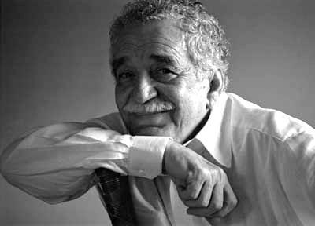

Miguel de Cervantes
Miguel de Cervantes nació en Alcalá de Henares, España, en 1547.
Fue escritor, poeta, dramaturgo y soldado, y tuvo una vida llena de experiencias.
Participó en la batalla de Lepanto en 1571, donde resultó herido en una mano.
Durante su vida enfrentó dificultades económicas y pasó algunos periodos en prisión.
Cervantes es considerado uno de los escritores más importantes de la literatura española.
Su obra más famosa es Don Quijote de la Mancha, publicada en dos partes.
También escribió novelas, poemas y obras de teatro.
Murió en Madrid en 1616, dejando una gran influencia en la literatura universal.
e.jpg)
Antoine de Saint-Exupéry
Antoine de Saint-Exupéry nació en Lyon, Francia, en 1900.
Fue escritor, poeta y aviador, y desde joven desarrolló una gran pasión por la aviación.
Trabajó como piloto de correo y sus experiencias de vuelo inspiraron muchas de sus obras.
Durante su vida viajó por diferentes países y enfrentó numerosos peligros como aviador.
Saint-Exupéry alcanzó fama mundial gracias a obras como El Principito.
Sus escritos suelen tratar temas como la amistad, la responsabilidad y el sentido de la vida.
Durante la Segunda Guerra Mundial continuó realizando misiones como piloto.
Desapareció durante un vuelo en 1944 y fue declarado muerto posteriormente.

las cronicas de una muerte anunciada
Gabriel García Márquez nació en Aracataca, Colombia, en 1927.
Fue escritor, periodista y uno de los autores latinoamericanos más reconocidos.
Desde joven se interesó por la literatura y comenzó trabajando como periodista.
Sus experiencias y el entorno de su país influyeron en gran parte de sus obras.
García Márquez escribió novelas, cuentos y artículos periodísticos durante su carrera.
Entre sus obras más conocidas están Cien años de soledad y Crónica de una muerte anunciada.
En 1982 recibió el Premio Nobel de Literatura por su trayectoria literaria.
Murió en Ciudad de México en 2014, dejando una importante influencia en la literatura mundial.
